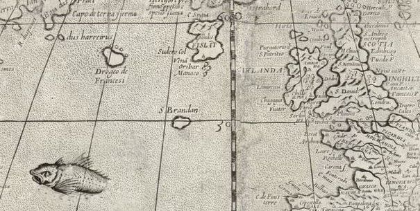
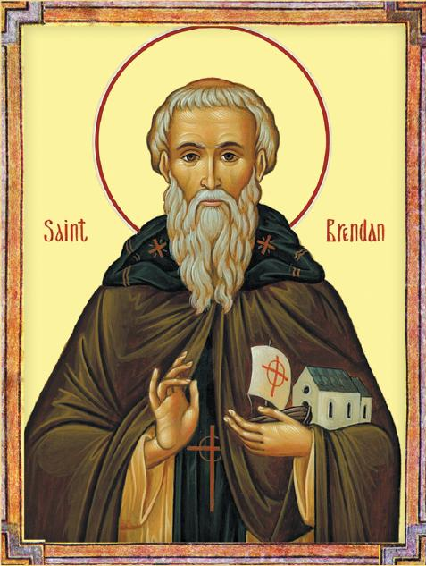
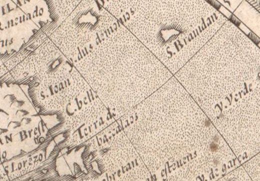
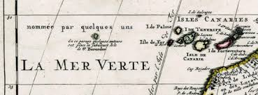
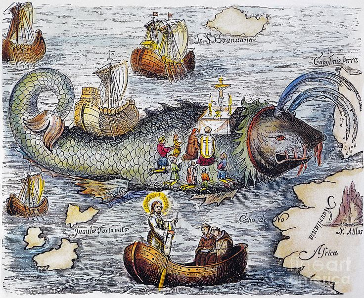

SAINT BRENDAN'S ISLAND

Introduction
Saint Brendan's Island (or San Borondon in Spanish) is a legendary island in the Atlantic Ocean, west of North Africa or the Canary Islands. It is named after the Irish Saint Brendan (c. 484–577 AD), known as "the Navigator" or "the Explorer." It has appeared on European maps for centuries and was considered by some to be "the Promised Land of the Saints" or an earthly paradise.
Over the years, I noticed the appearance of St. Brendan's Island on historical maps, which piqued my curiosity about this legendary island and its story. St. Brendan's Island was placed in various locations on maps of the Atlantic Ocean, often depicted west of England and Ireland, and also south near the Canary Islands. The island was named after St. Brendan of Clonfert.
It is said that the saint and his followers discovered it during their voyage across the ocean to spread Christianity in the islands. The island appeared on several maps during the time of Christopher Columbus, most notably Martin Behaim's map of Erdapville in 1492. In Spanish, it is known as Isla de San Borondon or Isla de Samborombon.
History

The main legend is derived from a 9th-century Latin text entitled "The Voyage of Saint Brendan the Monk" (Navigatio Sancti Brendani Abbatis). It tells how Brendan sailed with 14 monks (or 16 in some accounts) in a leather boat (currach) for seven years (c. 512-530 AD) in search of the "Promised Land of the Saints" or "Island of the Blessed".
The pretext for St. Brendan’s voyage began with his meeting with the monk Barinthus, who, according to some sources, was the grandson of the Irish King Niall. Barinthus related his nautical expedition beyond the "Island of Delights" to Eden, stating: "We only saw blooming plants and trees laden with fruit, and even stones were beautiful." Inspired by this account, St. Brendan told his monks: “If it is the will of God, it is the purpose of my heart to find the promised land of the saints of which Father Barinthus spoke:
Tantum si Dei voluntas est terram de qua locutus est pater Barinthus repromissionis sanctorum in corde meo proposui querere..
Saint Brendan’s voyages were described in an early 9th century manuscript titled Navigatio Sancti Brendani Abbatis (The Voyages of Saint Brendan the Abbot). According to the manuscript, another monk told Saint Brendan about an island paradise named The Promised Land of the Saints. Saint Brendan and several Irish monks decided to search for the island. They built a small boat and supplied it with provisions. They began to run out of food during the voyage. The crew landed on a deserted island and followed a dog to an uninhabited building. Inside the building they found a banquet that someone had prepared for them.
Saint Brendan and his crew finally reached The Promised Land of the Saints (Saint Brendan’s Island) after traveling for several years. The island was described as a “wide land full of trees bearing fruit.” They stayed on the island for forty days and gathered gemstones and fruit before they began their journey home to Ireland.

The island appeared on maps from the 14th century (such as Dulceert's map of 1339) to the 18th century, often west of the Canary Islands (where it is called San Borondon). Spanish sailors reported seeing it appear and disappear, perhaps as a mirage caused by hot winds. In the Canary Islands, the legend persists, and it is referred to as the mysterious "Eighth Island."
Theories

Some theorists suggest that the island is the remains of the sunken Atlantis, or a seamount (like the Great Meteor Seamount) west of the Canary Islands, submerged by volcanic activity. In alternative theories, its discovery is imagined to reveal ancient technology or an advanced civilization, altering the course of European history (such as the discovery of minerals or secret knowledge).

Some in the Canary Islands believe that the island appears and disappears due to volcanic activity, or that it is a "temporary island" that rises from the water and then sinks. There is an old belief that one of the seven true islands will sink, leaving San Boron in its place, a symbol of the fear of volcanic disasters.
The island is seen as "paradise on earth" where there is no night, the sun never sets, the trees bear perpetual fruit, and the birds sing sacred songs. It is said that Brendan remained there as an eternal gardener, and that whoever reaches it receives immortality or eternal youth, similar to Celtic myths such as the Land of Youth.
In Canarian folklore, it is called the "Enchanted Island" or "Undiscovered Island," and it disappears when humans approach due to a curse or supernatural forces. There are tales of sailors landing on it only to have it vanish beneath their feet, or that it is guarded by Saint Brendan himself as its eternal protector.
Description
They saw a land, extensive and thickly set with trees, laden with fruits, as in the autumn season. All the time they were traversing that land, during their stay in it, no night was there, but a light always shone, like the light of the sun in the meridian, and for the forty days they viewed the land in various directions, they could not find the limits thereof. One day, however, they came to a large river flowing towards the middle of the land, which they could not by any means cross over. St Brendan then said to the brethren: “We cannot cross over this river, and we must therefore remain ignorant of the size of this country.” While they were considering this matter, a young man of resplendent features, and very handsome aspect, came to them, and joyfully embracing and addressing each of them by his own name, said: “Peace be with you, brothers, and with all who practice the peace of Christ. Blessed are they who dwell in thy house, O Lord; they shall praise Thee for ever and ever.”
Like Eden, St. Brendan's island was described as a beautiful place. Those who visited the island said once you set foot there, you couldn't see any darkness because the Sun never set. According to monk Barino, who also visited the island, this was a Paradise in the Atlantic. In his writings Navigatio Sancti Brendani Abbatis, Barino wrote this mythical and beautiful island blessed with warm weather. The island had delicious fruits, clean rivers, and beautiful birds sitting on trees
According to Thomas O’Loughlin of the University of Nottingham, the divine quality of the promised land sought by St. Brendan was described in volcanic terms. In his essay, “Distant Islands: The Topography of Holiness,” O’Loughlin writes that St. Brendan’s promised land was: “an island where there is a brightness unlike any other… which needs neither sun nor moon… Now we have left our world and entered into a place where the divine is closer and less veiled.” This imagery aligns with the beliefs of most ancient cultures, which regarded volcanoes as the dwellings of powerful deities, often central to the acts of creation.
In his History of the Conquest of the Seven Canary Islands, published in the early 16th century, Fray Juan de Abreu Galindo provided a detailed description of what was considered the lost eighth island. Galindo pinpointed its likely location at 10 degrees 10 minutes longitude and 29 degrees 30 minutes latitude, noting it was much larger than the island of El Hierro. Regarding its appearance, he described it as having a valley in the middle with a mountain on each side—a uniform appearance that led him to conclude it was solid land rather than mere cloudscapes from El Hierro. Galindo certified this description through the testimonies of reliable people who claimed to have seen it many times.
Research

The mythical island appeared on several significant historical maps; in the 13th-century world map by Jacques de Vitry and in the Hereford Planisphere, it was labeled as the "Lost Island" with a legend stating: "St. Brendan discovered it, but no one has since been there again." It also featured on Fra Mauro’s 1457 world map. During the 16th century, prestigious atlases like Ortelius's Theatrum Orbis Terrarum and the Atlas Cosmographicae positioned it above the 50th parallel, centered in the Atlantic. By 1707, William Delisle, in his map of Northwest Africa, located it west of the westernmost Canary Island, El Hierro, adding the French note: "In this area, some authors have placed the fabulous Isle of St. Borondon."
Historical records detail fleeting and dramatic encounters with the lost island. In 1560, French sailors landed on its shores, leaving behind a letter, some coins, and a wooden cross. Ten years later, a sailor named Pero Velo recounted a harrowing tale to the Canary Islands regent. While returning from Brazil, a storm drove his ship toward an unknown island characterized by dense woods and two mountains split by a large valley. Velo jumped ashore with his companions, but suddenly "the land became deeply shrouded with fierce winds and thick mist." The crew aboard the ship cried out in distress, forcing Velo to retreat to a small boat and return to the caravel. The land soon vanished from sight; once the storm subsided, they attempted to find the island again, but it was never seen more. Two of his companions were left behind, never to be heard from again.
In 1566 Hernán Pérez de Grado, First Regent of the Royal Canary Islands Court, ordered the justices at la Palma, El Hierro and La Gomera to investigate the phenomenon. In his history, Abreu y Galindo reports a conversation with a French adventurer claiming to have visited San Borondon, departing hence when a storm set in and making the voyage to La Palma for shelter within a day. In another report, Alonso de Espinosa, governor of El Hierro, described sighting San Borondon island north west of El Hierro and “leeward” of La Palma. He listed 100 witnesses to the apparition.
Juan de Abréu Galindo reported in Historia de la Conquista de las siete Islas Canarias that “the island of Saint Brendan (San Borondon), which is the eighth and last, whose existence may be inferred from sightings of its apparitions, seems to be located at 20 degrees 30 minutes of latitude and eight leagues (40 kilometres) due west of La Gomera.” (The longitude given in the coordinates is based on the old measurement before the introduction of the Greenwich meridian).
In 1719, the Scottish monk Sigbert de Gembloux reported seeing the island, as did Don Matea Dacesta, mayor of Valverde, El Hierro in 1721. As a result of these sightings, that same year Juan de Mur y Aguerre, military governor of the Canary Islands, appointed a new commission of inquiry under Gaspar Dominguez, a sea captain; no fresh evidence was uncovered and subsequently interest waned. According to the Canary historian Ramirez, in 1723 a priest performed the rite of exorcism towards the island during one of its apparitions behind low cloud. This was witnessed by a large number of persons and sworn to on affidavit
In 1759 a Franciscan monk mentioned, but not identified by name, by Viera y Clavijo wrote to a friend: “I was most desirous to see the island of San Borondon and, finding myself in Alexero, La Palma, on 3 May at six of the morning, I saw, and can swear to it on oath, that while having in plain view at the same time the island of El Hierro, I saw another island of the same colour and appearance, and I made out through a telescope, much wooded terrain in its central area. Then I sent for the priest Antonio Jose Manrique, who had seen it twice previously, and upon arrival he saw only a portion of it, for when he was watching, a cloud obscured the mountain. It was subsequently visible for another 90 minutes. being seen by about forty spectators, but in the afternoon when we returned to the same point we could see nothing on account of the heavy rain.”
In his Noticias, Vol I, 1772, chronicler Viera y Clavijo wrote: “A few years ago while returning from the Americas, the captain of a ship of the Canary Fleet believed he saw La Palma appear and, having set his course for Tenerife based on his sighting, was astonished to find the real La Palma materialize in the distance next morning.” Viera adds that a similar entry is made in the diaries of Colonel don Roberto de Rivas, who made the observation that his ship “having been close to the island of La Palma in the afternoon, and not arriving there until late the next day”, the officer was forced to conclude that “the wind and current must have been extraordinarily unfavourable during the night.”

As early as the twelfth century, the first attempts were made to locate the islands described in the text. The geographer Honorius of Autun spoke in his Imago Mundi of an island called "Lost," noting that whenever it is sought, it can never be found. This island, referring to St. Brendan’s Promised Land, was also known by names such as Apósitus, Non Trubada (The Undiscovered), or Covered, before ultimately being named Saint Brendan’s Isle. A symbiotic relationship existed between Jasconius (the whale island) and this elusive land that was geographically difficult to pinpoint. Even in Christopher Columbus’s journal, the Admiral noted that many honest men swore they saw land to the west of the Canaries every year toward the sunset—a claim affirmed under oath by many from the island of Gomera.

The Mappa Mundi deposited at the Hereford Cathedral in England is an example of an early map that shows Saint Brendan’s Island. The Hereford Mappa Mundi was created around the year 1300. Saint Brendan’s Island is shown as “Fortunate Insulae Sex Sunt Insulae Sct. Brandani” next to the lowest touch point at the bottom of the map.
Beginning in the fifteenth century, expeditions were sent out from Portugal and Bristol, England, to locate St. Brendan’s island, though of course this non-existent land was never discovered. Still, by the thirteenth century the island appeared as a concrete place on maps. The first map to include the island seems to be the Ebstorf mappemundi of 1235. It also appeared on the Hereford mappemundi of 1275 (above), which labels the island as “Fortunate Insulae sex sunt Insulae Sct. Brandani.”
In Planiferio de Ebstorf (1234), Marcos Martinez referred to “the lost island discovered by St Brendan but nobody has found it since” and in Mapamundi de Hereford (1275) the whole archipelago is described as “The Isles of the Blessed and the Island of St Brendan”.